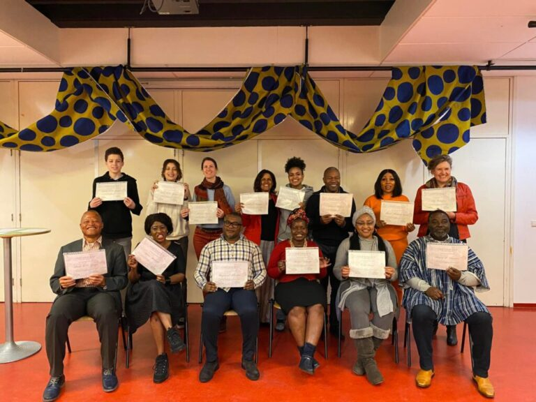
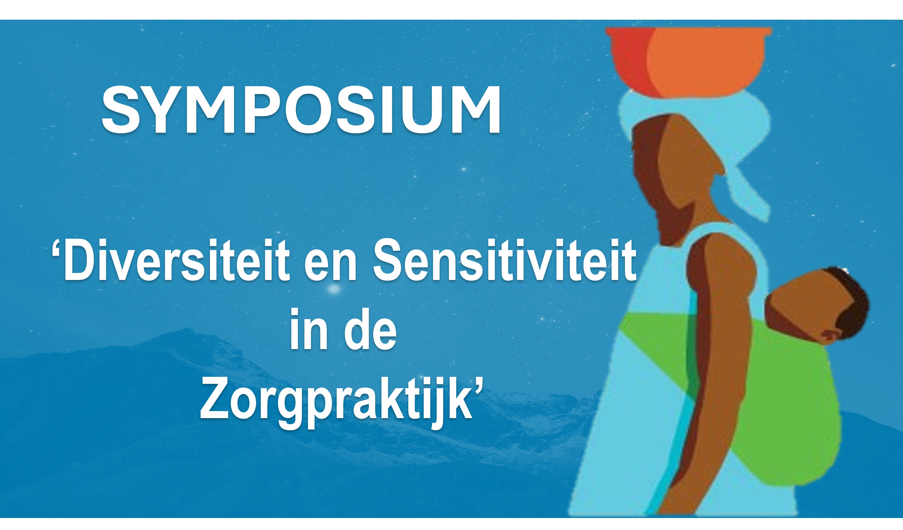

SMMK Projecten

Rotterdam Gezond en Wel
Een initiatief gericht op het verbeteren van mentale gezondheid binnen migrantengemeenschappen. We bieden workshops, ondersteuningsgroepen en trainingen aan om bewustwording te vergroten en stigma's te doorbreken.
Meer details

SYMPOSIUM Diversiteit en Sensitiviteit in de Zorgpraktijk
Een interactief symposium over culturele sensitiviteit in de gezondheidszorg, met workshops door vooraanstaande experts en praktische tools voor zorgprofessionals.
Meer details